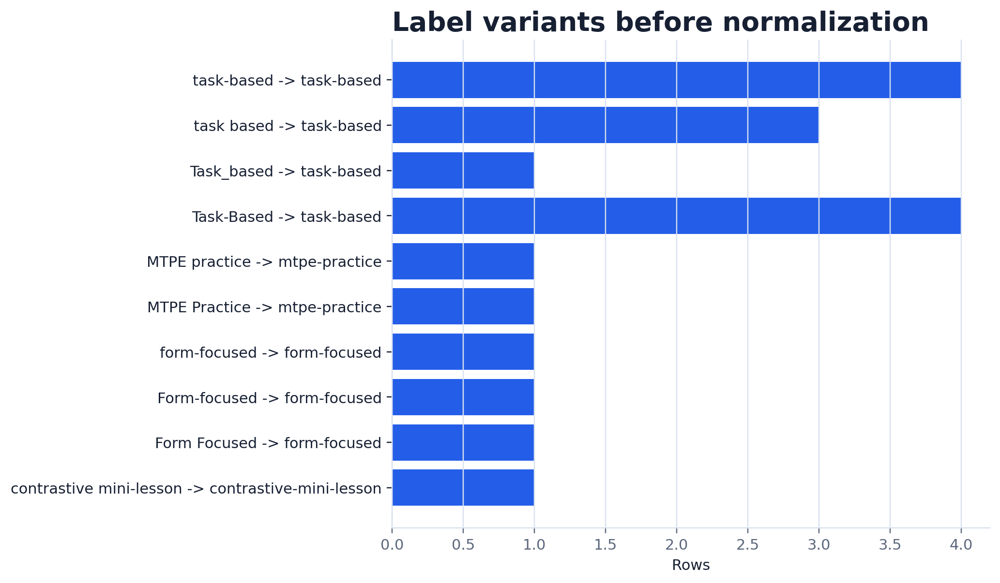

Inspect
Thấy lỗi trước khi plot.
See problems before plotting.
Data chưa sạch có thể làm figure nói sai một cách rất tự tin.
Unclean data can make a figure say the wrong thing with great confidence.
Thấy lỗi trước khi plot.
See problems before plotting.
Viết rule, không đoán.
Write a rule, do not guess.
Chuẩn hóa, convert, flag.
Normalize, convert, flag.
Log, caption, Methods.
Log, caption, Methods.
Có làm lệch sample không?
Does it change the sample?
Có tạo dữ liệu giả không?
Does it invent data?
Có gom đúng nhóm không?
Does it combine the right group?
| learner | activity_group | date | pre | post | minutes |
|---|---|---|---|---|---|
| L003 | Task_based | 03-01-2026 | 55 | 70 | 34 |
| L009 | MTPE practice | 2026-03-04 | 60 | 105 | 35 |
| L014 | Form-focused | 2026-03-06 | 57 | sixty-five | 26 |
Nếu plot ngay, label bị tách nhóm và score sai kiểu vẫn ảnh hưởng đến claim.
If we plot immediately, labels split groups and wrong score types distort the claim.
blank, NA, n/a, --
same observation key
case, space, hyphen
text score, 105, -3
Rule: learner activity records are duplicated when learner_id + survey_date repeat.
Không phải lúc nào duplicate cũng là hai dòng giống hệt mọi cột. Trong research, key mới là trọng tâm.
Duplicates are not always exact row copies. In research, the observation key is the center.
raw.duplicated(subset=["learner_id", "survey_date"], keep="first").sum()

clean["post_vocab_score_raw"] = clean["post_vocab_score"]
clean["post_vocab_score"] = pd.to_numeric(
clean["post_vocab_score"].replace("", pd.NA),
errors="coerce"
)
Giá trị không parse được trở thành missing. Sau đó ta phải đếm và ghi log.
Unparseable values become missing. Then we must count and log them.
Ngoài miền 0-100.
Outside 0-100.
Thời lượng âm.
Negative duration.
Ngoài miền 1-5.
Outside 1-5.
| issue | decision | paper note |
|---|---|---|
| duplicate key | remove later learner-date row | state duplicate key |
| label variants | normalize to canonical labels | report label map |
| invalid score | set to NA, preserve raw | report valid range |

Ta có thể nói: "Dữ liệu đủ sạch để minh họa workflow và vẽ figure mô tả."
We can say: "The data are clean enough to demonstrate the workflow and draw a descriptive figure."
Ta không nên nói: "Hoạt động này chắc chắn gây tăng điểm."
We should not say: "This activity certainly caused score gains."
| Track | Dirty issue | Risk |
|---|---|---|
| Education policy | Viet Nam / Vietnam / PR China | duplicate country bars |
| Translation studies | score imported as text | mean score fails or excludes rows |
| Contrastive linguistics | duplicate segment IDs | one pattern is overweighted |
The learner-survey data were screened for duplicate learner-date records, missing outcome cells, non-canonical activity labels, invalid numeric ranges, and date parsing failures. Invalid numeric values were set to missing and raw audit columns were preserved; gain scores were calculated only for complete pre/post pairs.
quality checks
auditable rules
before/after figure
120-180 words
Tuần sau dùng filter, groupby, pivot và merge để tạo analysis-ready table. Nhưng chỉ làm vậy sau khi cleaning đã có log.
Next module uses filter, groupby, pivot, and merge to create analysis-ready tables. But that only makes sense after cleaning has a log.